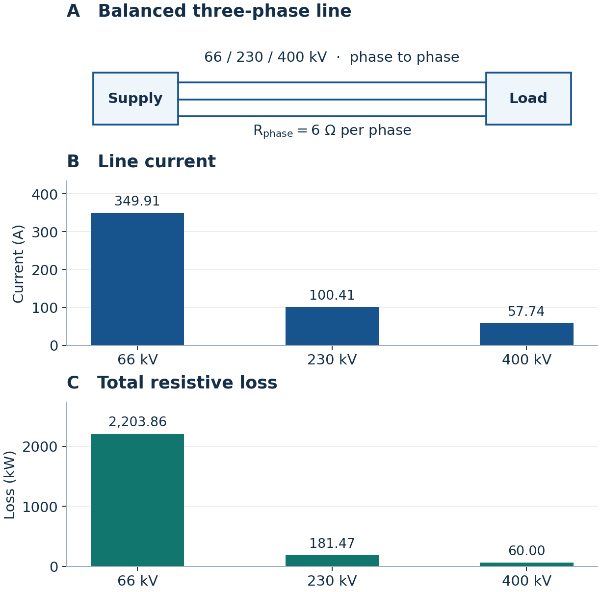
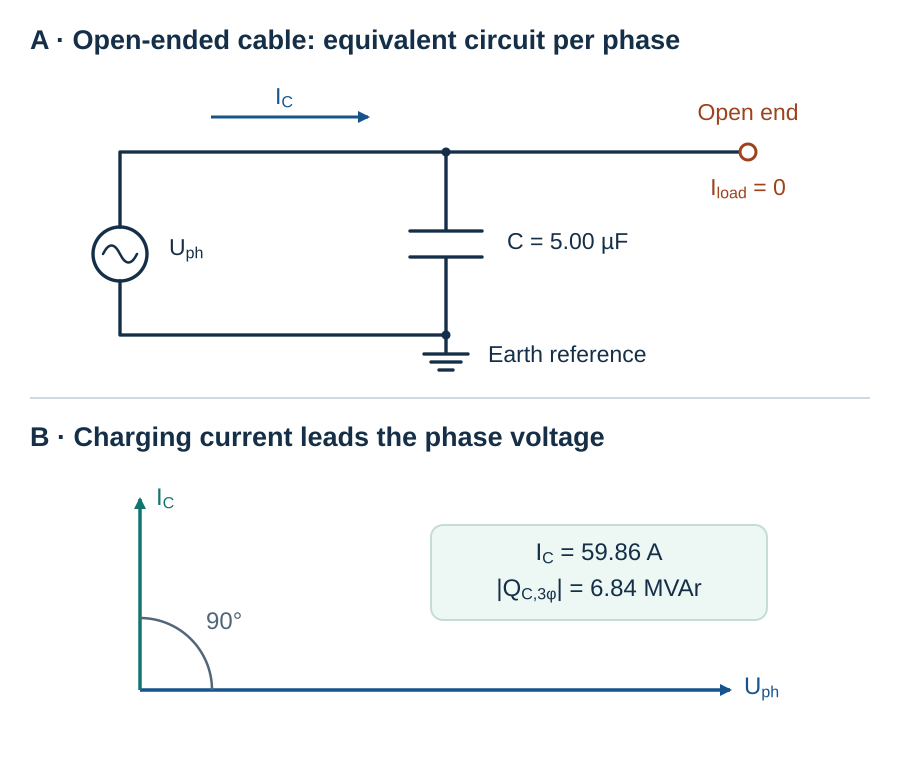
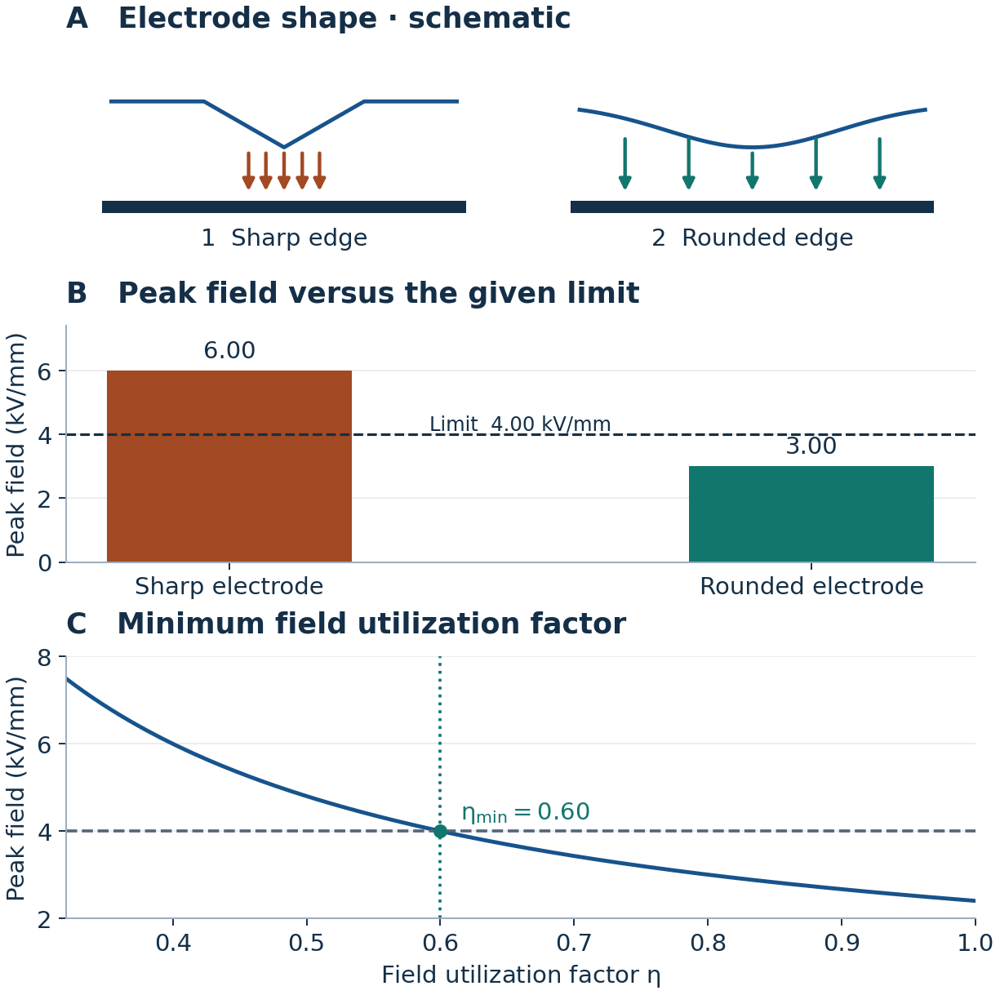
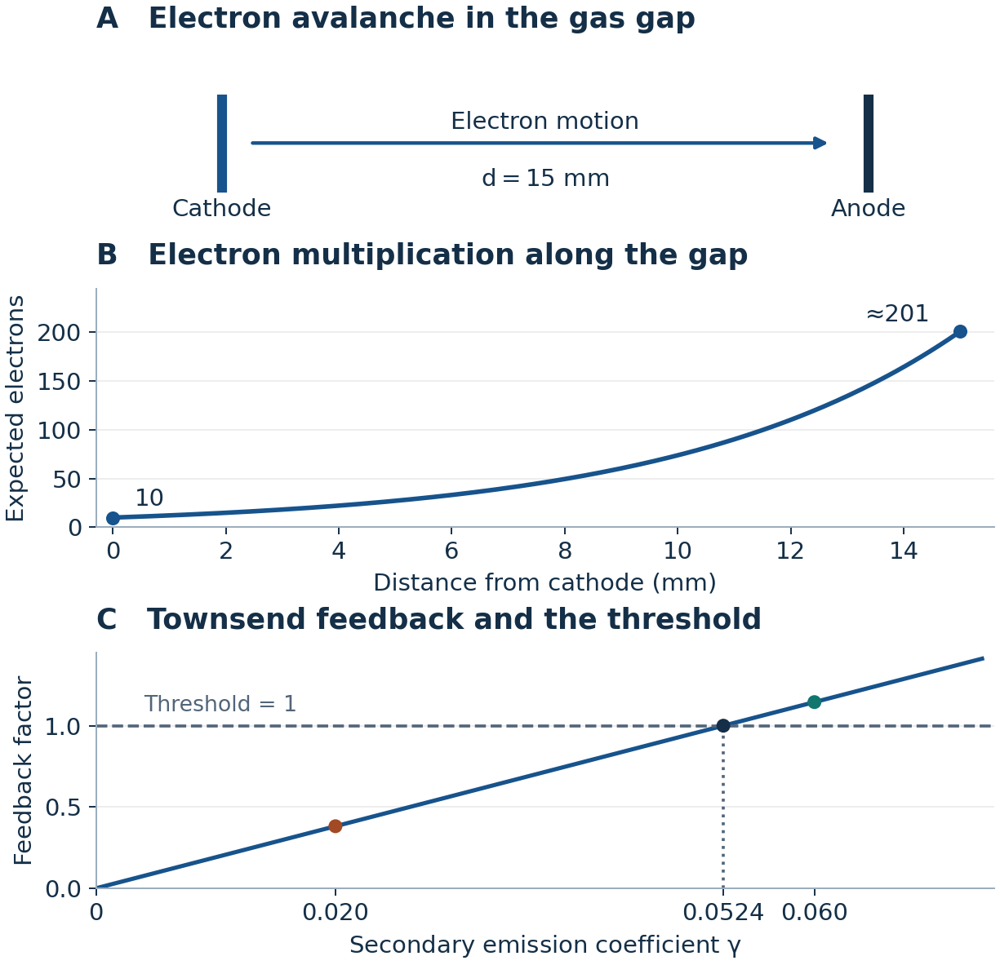
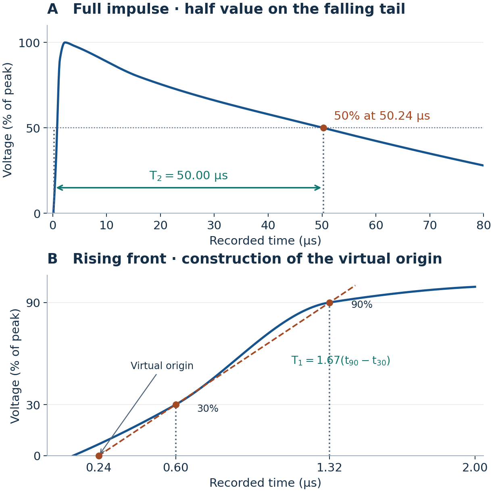

PART 3 | الجزء الثالث
Problems and Step-by-Step Solutions
مسائل وحلول خطوة بخطوة
High Voltage Engineering I | هندسة التوتر العالي 1
1. Transmission voltage, current and losses
1. أثر توتر النقل في التيار والضياعات
In a balanced three-phase line, the load receives 36 MW at a power factor of 0.90. Compare three line-to-line RMS voltages at the receiving end: 66 kV, 230 kV and 400 kV, nominal levels of the Syrian transmission grid. Assume the resistance of each phase conductor over the full route is 6 Ω in all three cases.
ينقل خط ثلاثي الأطوار متوازن استطاعة فعالة مقدارها 36 MW إلى الحمل عند معامل استطاعة 0.90. قارن ثلاث حالات يكون فيها التوتر الفعال بين الأطوار عند الحمل 66 kV أو 230 kV أو 400 kV، وهي مستويات اسمية في شبكة النقل السورية. افترض أن مقاومة كل طور على طول الخط تساوي 6 Ω في الحالات الثلاث.
- Find the line current at each voltage.
- Find the total resistive loss in the three phases.
- Find the percentage reduction in loss when moving from 66 kV to 230 kV and from 66 kV to 400 kV. Explain both results.
- احسب تيار الخط عند كل مستوى توتر.
- احسب استطاعة الضياعات الأومية الكلية Pₗₒₛₛ في الأطوار الثلاثة.
- اتخذ حالة 66 kV مرجعا، واحسب نسبة انخفاض الضياعات عند الانتقال إلى 230 kV ثم إلى 400 kV. فسر النتيجتين.
Step-by-step solution
الحل خطوة بخطوة

A. Three-phase line. B. Line current at the three voltages. C. Total resistive loss.
A. خط النقل ثلاثي الأطوار. B. تيار الخط عند التوترات الثلاثة. C. استطاعة الضياعات الأومية الكلية.
1. Draw the line and locate the data
1. ارسم الخط وحدد موضع المعطيات
In panel A, put the supply on the left and the load on the right. Draw three conductors. Mark the current toward the load and write 6 Ω on each conductor. Put 36 MW and the power factor next to the load. Each voltage is measured between two phases at the load.
في اللوحة A، ارسم المصدر يسارا والحمل يمينا وصلهما بثلاثة موصلات. ضع سهما للتيار نحو الحمل واكتب 6 Ω لكل موصل. اكتب 36 MW ومعامل الاستطاعة عند الحمل. يقاس كل توتر معطى بين طورين عند الحمل.
2. Calculate the line current and draw panel B
2. احسب تيار الخط وارسم اللوحة B
P is the active power, ULL is the line-to-line RMS voltage, I is the line current and cos φ is the power factor. Convert MW to W and kV to V before substitution.
يمثل P الاستطاعة الفعالة، وULL التوتر الفعال بين الأطوار، وI تيار الخط، وcos φ معامل الاستطاعة. حول الميغاواط إلى الواط والكيلوفولط إلى الفولط.
Put the three voltage levels on the horizontal axis and current in amperes on the vertical axis. Draw each bar to its calculated height.
ضع حالات التوتر على المحور الأفقي والتيار بالأمبير على المحور الرأسي. ارسم كل عمود بالارتفاع الذي حسبته.
3. Calculate the losses and draw panel C
3. احسب الضياعات وارسم اللوحة C
For one phase, multiply the square of the current by the phase resistance. Multiply by three for the balanced line. Use unrounded current values and convert watts to kilowatts.
للطور الواحد اضرب مربع التيار في مقاومة الطور. اضرب الناتج في 3 لحساب الضياعات الكلية للخط المتوازن. استخدم التيار قبل التقريب، ثم حول الواط إلى الكيلوواط.
Keep the voltage order used in panel B, and replace the vertical axis with loss in kilowatts. Compare the bars within each panel to see the effect of squaring the current.
احتفظ بترتيب التوترات نفسه في اللوحة B، واجعل المحور الرأسي للضياعات بالكيلوواط. قارن ارتفاع الأعمدة داخل كل لوحة لتلاحظ أثر تربيع التيار.
4. Find the percentage reductions
4. احسب نسب انخفاض الضياعات
Divide the new loss by the loss at 66 kV to find the fraction remaining. Subtract it from one and convert to percent. With fixed power, power factor and resistance, the remaining fraction equals the square of the ratio of the reference voltage to the new voltage.
اقسم ضياعات الحالة الجديدة على ضياعات حالة 66 kV لتحصل على الجزء المتبقي، ثم اطرحه من الواحد وحوله إلى نسبة مئوية. مع ثبات الاستطاعة ومعامل الاستطاعة والمقاومة، يساوي الجزء المتبقي مربع نسبة التوتر المرجعي إلى التوتر الجديد.
2. Charging current of an open-ended cable
2. تيار شحن كابل متناوب مفتوح الطرف
A 25 km three-phase cable is energized at 66 kV line-to-line RMS and 50 Hz. Its phase-to-earth capacitance is 0.20 µF/km per phase. The receiving end is open. Model each phase as a single equivalent capacitance to earth and neglect cable resistance and inductance.
يغذى كابل ثلاثي الأطوار طوله 25 km بتوتر فعال بين الأطوار مقداره 66 kV وتردد 50 Hz. تبلغ سعة كل طور إلى الأرض لكل كيلومتر 0.20 µF/km. الطرف المستقبل مفتوح. مثل كل طور بسعة مكافئة إلى الأرض وأهمل مقاومة الكابل ومحاثته.
- Find the total per-phase capacitance and the RMS phase-to-earth voltage.
- Find the per-phase charging current and the magnitude of the total three-phase reactive power.
- Explain why current flows at the supply end when the receiving end is open.
- احسب السعة الكلية لكل طور والتوتر الفعال بين الطور والأرض.
- احسب تيار الشحن لكل طور ومقدار الاستطاعة الردية السعوية الكلية للأطوار الثلاثة.
- فسر سبب مرور تيار عند طرف المصدر مع أن الطرف المستقبل مفتوح.
Step-by-step solution
الحل خطوة بخطوة

A. Per-phase equivalent circuit. B. The charging-current phasor leads the voltage by 90°.
A. الدارة المكافئة لطور واحد. B. يتقدم متجه تيار الشحن على متجه التوتر بمقدار 90°.
1. Draw one phase
1. ارسم دارة طور واحد
In A, draw the AC supply on the left and leave the receiving end open on the right. Place the equivalent capacitor from the phase conductor to earth. Put the current arrow upstream of the capacitor branch.
في A، ارسم مصدر التوتر المتناوب يسارا واترك الطرف المستقبل مفتوحا يمينا. صل المكثف المكافئ بين ناقل الطور والأرض. ضع سهم التيار قبل فرع المكثف لتحديد موضع قياس تيار الشحن.
2. Label the capacitor and the supply
2. ضع قيمتي السعة والتوتر على الدارة
Multiply capacitance per kilometre by cable length. The capacitor sees phase-to-earth voltage, so divide the line-to-line voltage by √3 in this balanced circuit.
اضرب سعة الطور لكل كيلومتر في طول الكابل. يتصل المكثف بين الطور والأرض، لذلك نقسم التوتر بين الأطوار على الجذر التربيعي للعدد 3 في النظام المتوازن.
3. Calculate the current and construct the phasor diagram
3. احسب التيار وارسم المخطط الطوري
Use farads and volts. In B, put the voltage phasor horizontally to the right as the reference. Draw the current phasor 90° ahead of it, vertically upward, as expected for an ideal capacitor.
عوض بالفاراد والفولط. في B، ارسم متجه التوتر أفقيا نحو اليمين ليكون مرجع الزاوية. ثم ارسم متجه التيار عموديا نحو الأعلى. في المكثف المثالي يتقدم التيار على التوتر بمقدار 90°.
4. Sum the reactive power and trace the current
4. اجمع الاستطاعة الردية وتتبع التيار
Find the reactive power magnitude per phase from the product of phase voltage and current. Multiply by three. Trace the arrow in A from the supply to the capacitor branch. The alternating voltage changes the stored charge, so charging current flows on the supply side and the load current at the open end is zero.
احسب مقدار الاستطاعة الردية لكل طور من حاصل ضرب توتره بتياره، ثم اضرب في 3. تتبع السهم في A من المصدر إلى فرع المكثف. يتغير مقدار الشحنة المختزنة مع التوتر المتناوب، فيمر تيار الشحن عند المصدر ويكون تيار الحمل عند الطرف المفتوح صفرا.
3. Electrode shape and electric field strength
3. أثر شكل الأقطاب في شدة المجال الكهربائي
Apply 72 kV DC across a 30 mm insulating gap. The field utilization factor is 0.40 for the first arrangement and 0.80 after rounding the sharp electrode edge. In this exercise, the maximum permissible field is 4.00 kV/mm.
يطبق فرق توتر مستمر قدره 72 kV على فجوة عازلة طولها 30 mm. عامل استثمار المجال η يساوي 0.40 في الترتيب الأول ويصبح 0.80 بعد تدوير الحافة الحادة للقطب. الحد المسموح لشدة المجال العظمى في المسألة 4.00 kV/mm.
- Find the mean and maximum field for each arrangement.
- Identify which arrangement meets the limit and explain why.
- Find the minimum acceptable field utilization factor.
- احسب شدة المجال المتوسطة والعظمى في كل ترتيب.
- حدد الترتيب الذي يحقق الشرط وفسر السبب.
- احسب أصغر قيمة مقبولة لعامل استثمار المجال.
Step-by-step solution
الحل خطوة بخطوة

A. Qualitative field concentration. B. Peak field versus the limit. C. Graphical determination of the minimum utilization factor.
A. تمركز المجال بصورة نوعية. B. مقارنة المجال الأعظمي بحده المسموح. C. تعيين عامل الاستثمار الأدنى بيانيا.
1. Sketch both electrode shapes
1. ارسم شكلي الأقطاب
In A, sketch a sharp edge and a rounded edge facing the opposing electrode. Draw the arrows closer together near the sharp edge to show field concentration qualitatively. Label both cases with the same voltage and gap.
في A، ارسم حافة حادة ثم حافة مدورة في مواجهة القطب المقابل. اجعل الأسهم أكثر تقاربا قرب الحافة الحادة لتمثيل تمركز المجال بصورة نوعية. اكتب التوتر نفسه وطول الفجوة نفسه للترتيبين.
2. Calculate the mean and peak fields
2. احسب الشدة المتوسطة والعظمى
The mean field is voltage divided by gap length. The utilization factor is the ratio of mean to maximum field. To obtain the maximum field, divide the mean field by the given utilization factor.
نحسب الشدة المتوسطة بقسمة التوتر على طول الفجوة. عامل الاستثمار هو نسبة الشدة المتوسطة إلى الشدة العظمى. للحصول على الشدة العظمى اقسم الشدة المتوسطة على عامل الاستثمار لكل ترتيب.
3. Draw the bars and check the limit
3. ارسم العمودين وتحقق من الشرط
In B, draw columns of 6.00 and 3.00 kV/mm and a horizontal line at 4.00 kV/mm. The rounded electrode meets the limit. Rounding reduces local field concentration while the voltage, gap length and mean field stay constant.
في B، ارسم عمودين عند 6.00 kV/mm و3.00 kV/mm، وخطا أفقيا عند 4.00 kV/mm. يحقق القطب المدور الشرط. يقل تركيز المجال قرب الحافة بعد تدويرها، مع ثبات التوتر وطول الفجوة والشدة المتوسطة.
4. Find the intersection in panel C
4. استخرج قيمة التقاطع في اللوحة C
Place η on the horizontal axis and maximum field on the vertical axis. Draw the decreasing curve and the horizontal limit. Project their intersection down to the η axis. The values on and to the right of this intersection satisfy the limit.
ضع η على المحور الأفقي والمجال الأعظمي على المحور الرأسي. ارسم المنحنى المتناقص وخط الحد المسموح. أسقط نقطة تقاطعهما على المحور الأفقي. يحقق الشرط كل ما يقع عند التقاطع أو إلى يمينه.
4. Electron avalanche and the Townsend criterion
4. الانهيال الإلكتروني وشرط تاونسند
Ten seed electrons leave the cathode toward the anode across a 15 mm gas gap. Assume a uniform field, constant primary ionization coefficient α = 200 m⁻¹ and negligible electron attachment. Compare two cathode surfaces with secondary emission coefficients 0.020 and 0.060.
تنطلق 10 إلكترونات أولية من المهبط نحو المصعد عبر فجوة غازية طولها 15 mm. افترض مجالا منتظما ومعامل تأين أولي ثابتا α = 200 m⁻¹ وأهمل التقاط الإلكترونات. قارن سطحين للمهبط، معاملا الانبعاث الثانوي لهما 0.020 و0.060.
- Find the expected number of electrons arriving at the anode after one avalanche.
- Find the feedback factor for each surface and determine which meets the self-sustaining discharge criterion.
- Find the critical secondary emission coefficient.
- احسب العدد المتوقع للإلكترونات التي تصل إلى المصعد بعد انهيال واحد.
- احسب مقدار التغذية الراجعة لكل سطح وحدد السطح الذي يحقق شرط استمرار التفريغ ذاتيا.
- احسب القيمة الحرجة لمعامل الانبعاث الثانوي.
Step-by-step solution
الحل خطوة بخطوة

A. Electron motion across the gap. B. Electron growth with distance. C. Feedback and threshold.
A. اتجاه حركة الإلكترونات. B. نمو عددها مع المسافة. C. التغذية الراجعة وعتبة الاستمرار الذاتي.
1. Mark the cathode, anode and direction
1. حدد المهبط والمصعد واتجاه الحركة
In A, place the cathode on the left at x = 0 and the anode on the right at x = d. Draw an arrow toward the anode. Mark ten seed electrons and the 15 mm gap.
في A، ضع المهبط يسارا عند x = 0 والمصعد يمينا عند x = d. ارسم سهما من المهبط نحو المصعد. ضع العدد الابتدائي 10 عند المهبط واكتب طول الفجوة 15 mm.
2. Calculate three points and draw the avalanche curve
2. احسب ثلاث نقاط وارسم منحنى الانهيال
Place distance on the horizontal axis of B and expected electron count on its vertical axis. Convert the gap length to metres before multiplying by α. Compute the count at the cathode, at mid-gap and at the anode, and draw the exponential curve through those points.
ضع المسافة على المحور الأفقي في B والعدد المتوقع للإلكترونات على المحور الرأسي. حول طول الفجوة إلى المتر قبل ضربه في α. احسب العدد عند المهبط، وفي منتصف الفجوة، وعند المصعد، ثم ارسم المنحنى الأسي مارا بهذه النقاط.
3. Compute the feedback and compare it with the threshold
3. احسب التغذية الراجعة وقارنها بالعتبة
Each initial electron produces exp(αd) − 1 new electrons and the same expected number of positive ions under the model. Returning ions can release secondary electrons at the cathode. Multiplying the expected ion count per initial electron by the emission coefficient γ gives the feedback factor F.
ينتج عن كل إلكترون أولي عدد متوقع من الإلكترونات الجديدة يساويه عدد الأيونات الموجبة المتولدة. قد تحرر الأيونات العائدة إلكترونات ثانوية عند المهبط. نضرب عدد الأيونات المتوقع لكل إلكترون أولي في معامل الانبعاث γ لحساب مقدار التغذية الراجعة F.
On C, plot γ horizontally and F vertically. Draw a horizontal line at F = 1. Mark the first surface below the threshold and the second above it. The second surface meets the self-sustaining criterion in this model.
في C، ضع γ أفقيا وF رأسيا. ارسم خط العتبة عند F = 1. ضع نقطة السطح الأول أسفل الخط ونقطة السطح الثاني فوقه. يحقق السطح الثاني شرط الاستمرار الذاتي وفق النموذج.
4. Read and verify the critical coefficient
4. اقرأ معامل الانبعاث الحرج وتحقق منه
With fixed α and d, the feedback factor is linear in γ. Project the intersection of the feedback line and the threshold onto the horizontal axis. Verify by setting F to one.
مع ثبات معامل التأين وطول الفجوة، تكون التغذية الراجعة دالة خطية في γ. أسقط نقطة تقاطع مستقيم التغذية الراجعة مع خط العتبة على المحور الأفقي. تحقق من القيمة بمساواة F بالواحد.
5. Reading a lightning impulse waveform
5. قراءة نبضة توتر صاعقية
From the same recorder time reference, the impulse reaches 30% of its peak on the rising front at 0.60 µs and 90% at 1.32 µs. It falls to 50% of its peak on the tail at 50.24 µs.
يقاس الزمن في جميع النقاط من مرجع جهاز التسجيل نفسه. تبلغ النبضة 30% من قيمتها العظمى على الجبهة الصاعدة عند 0.60 µs، و90% عند 1.32 µs، ثم تبلغ 50% على الذيل الهابط عند 50.24 µs.
- Find the virtual origin graphically and calculate its time.
- Find the virtual front time and the time to half-value on the tail.
- Write the impulse designation and interpret both numbers.
- عين الأصل الافتراضي بيانيا واحسب زمنه.
- احسب زمن الجبهة الافتراضي وزمن بلوغ نصف القيمة على الذيل.
- اكتب ترميز النبضة ووضح معنى كل عدد.
Step-by-step solution
الحل خطوة بخطوة

A. Full impulse and half-value on the falling tail. B. Enlarged rising front and construction of the virtual origin.
A. النبضة كاملة ونقطة نصف القيمة على الذيل الهابط. B. تكبير الجبهة الصاعدة لتحديد الأصل الافتراضي.
1. Set the axes and mark the three readings
1. حدد المحورين وضع نقاط القياس
Use recorder time in microseconds on the horizontal axis and voltage as a percentage of peak on the vertical axis. Mark the 50% point on the falling tail in A. Use the enlarged front in B to place the 30% and 90% readings. The curve illustrates the three specified points.
ضع زمن التسجيل بالميكروثانية على المحور الأفقي ونسبة التوتر إلى قيمته العظمى على المحور الرأسي. ضع نقطة 50% على الذيل الهابط في A. استخدم التكبير في B لوضع نقطتي 30% و90% على الجبهة الصاعدة. المنحنى توضيحي ويمر بنقاط القياس المعطاة.
2. Extend the straight line to find the virtual origin
2. مد المستقيم حتى تجد الأصل الافتراضي
Join the 30% and 90% points with a straight line and extend it back to zero voltage. The intersection is the virtual origin t₀. A rise of 60 percentage points takes 0.72 µs, so moving back 30 percentage points takes half that time.
صل نقطتي 30% و90% بمستقيم ومده إلى الخلف حتى يقطع محور الزمن. نقطة التقاطع هي الأصل الافتراضي t₀. تستغرق الزيادة بمقدار 60 نقطة مئوية 0.72 µs، لذلك يستغرق الرجوع بمقدار 30 نقطة مئوية نصف هذه المدة.
3. Calculate the virtual front time
3. احسب زمن الجبهة الافتراضي
The measured interval spans 60% of peak on the straight construction line. Scale it to 100% by multiplying by approximately 1.67.
تغطي المدة المقاسة 60% من القيمة العظمى على المستقيم المساعد. لحساب المدة التي تقابل 100%، نضرب المدة المقاسة بمعامل يقارب 1.67.
4. Draw and measure the time to half-value
4. ارسم سهم زمن نصف القيمة واحسبه
In A, project the 50% tail point onto the time axis. Draw a horizontal arrow from the virtual origin to that projection. Its length is T₂.
في A، أسقط نقطة 50% على محور الزمن. ارسم سهما أفقيا يبدأ من الأصل الافتراضي وينتهي عند الإسقاط. طول السهم يمثل T₂.
5. Write the impulse designation
5. اكتب ترميز النبضة
Write the virtual front time first and the time from the virtual origin to half-value on the falling tail second.
اكتب زمن الجبهة الافتراضي أولا، ثم الزمن من الأصل الافتراضي حتى بلوغ نصف القيمة على الذيل الهابط.